|
LOS BAÑALES
El yacimiento arqueológico de los Bañales
es uno de los principales yacimientos arqueológicos de Aragón, se halla en el
término municipal de Uncastillo, Zaragoza, rodeado por las localidades Layana,
Sádaba y Biota.
Las primeras excavaciones datan de 1942, bajo la dirección de José Galiay
Sarañana, en el yacimiento se han realizado varias campañas arqueológicas,
siendo la más importante la realizada por el catedrático Antonio Beltrán
Martínez en 1979. En 1931 fue declarado Tesoro Artístico Nacional y Bien de
Interés Cultural por la Ley de Patrimonio Histórico Español de 1985.
Los Bañales fue una zona muy romanizada, como se desprende de los numerosos
restos encontrados en la Comarca, como son: restos de las construcciones
hidráulicas a lo largo del río Riguel; las villae en un radio inferior a 5 km.
Los mausoleos de los Atilios y el de la Sinagoga en Sádaba; una vía que debió
discurrir por la zona comunicando Caesaraugusta y Pompaelo y cuya presencia la
atestigua los miliarios hallados; el bustum de Biota; el sarcófago
romano-cristiano encontrado en las proximidades de la ermita de San Román de
Castiliscar y los numerosos vestigios encontrados en Sofuentes, en especial los
del cerro Ladrero, entre otros.
No se conoce su nombre, aunque se han barajado los de Clarina, Muscaria,
Atiliana, la Munda… A la ciudad actualmente se la conoce como Bañales, por la
ermita del S. XVIII construida en el yacimiento y dedicada a “Nuestra Señora de
los Bañales”.
Se cree que “Bañales” era una ciudad residencial de época imperial, siglos I- IV,
asentada sobre un posible poblamiento anterior.
Dentro del núcleo urbano, se pueden distinguir dos zonas: la zona monumental o
pública, donde se encuentran el foro, las termas, el acueducto y el templo; y la
zona residencial, asentada sobre el pequeño cerro conocido como Pueyo de los
Bañales.
EL FORO
De él son las dos columnas toscanas,
que dan la bienvenida al visitante, compuestas por 7 tambores.
Se cree que estas formarían parte de un pórtico del que todavía se puede
apreciar el basamento de otras 5 columnas y que podría ser una de las
entradas al foro o plaza porticada, ya que junto a ellas se encuentra una
escalera de 12 peldaños de piedra labrada. Al lado de las columnas, durante las excavaciones se hallaron los restos de una
calle con aceras y los cimientos de las casas adyacentes.
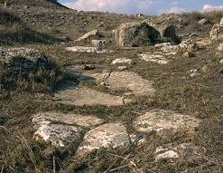 |
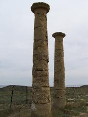 |
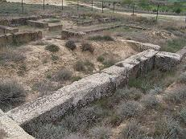 |
LAS TERMAS
Posiblemente se el edificio que
presenta un interés mayor, ya que es uno de los mejores conservados.
Su construcción se ha datado a mediados del siglo I, poseía capacidad para
albergar a más de cincuenta usuarios que, por las agujas de hueso para el
cabello encontradas en las excavaciones, pudieron ser tanto hombres como
mujeres.
Las excavaciones han sacado a la luz la estructura prácticamente la
totalidad de su planta pudiendo adivinarse el uso de cada estancia y su
recorrido por las diferentes salas.
A el se accede por el lado Este del edificio, por la entrada monumental
formada por un pórtico de tres arcos, que da acceso a un primer vestíbulo,
descendiendo los cinco escalones siguientes llegamos a una pequeña sala de
espera para los criados con bancos corridos.
Tras atravesar un pequeño pasillo abovedado se accede al apodyterium, en
el que todavía se conservan los loculi, hornacinas para dejar la ropa y
los objetos personales.
Desde aquí continuaríamos el recorrido hacia las diferentes salas de baño:
el frigidarium; el tepidarium, y el caldarium. El resto de estancias
serían el destrictorium, para los masajes y las unciones, el laconicum o
sauna y dependencias para realizar ejercicios físicos.
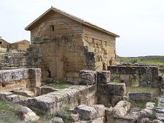 |
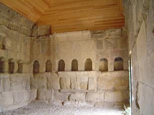 |
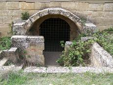 |
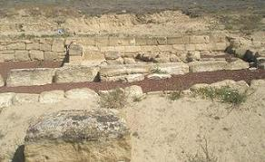
Foto de Noemí I.L.
|
En las excavaciones se encontraron los restos del del praefurnium y del
hypocaustum, además de lucernas, abundantes fragmentos de recipientes de vidrio
para ungüentos y aceites, tubos de cerámica y plomo para la conducción de las
aguas... Los baños estaban en uso cuando Pedro II los donó al convento de
Cambrón en 1212. Se ha puesto en valor los restos de una vivienda al oeste de las
termas, con una tabernae, que se asocia con una tienda de perfumes.
Ver
Termas romanas |
EL
ACUEDUCTO
De este singular acueducto se conservan 32
pilastras, posiblemente menos de la mitad de las que debió tener. Se ha datado
en la misma fecha que las termas.
Las denominadas pilastras se hallan dispuestas formando un trazado curvo
adaptándose a la orografía del terreno donde se encuentran asentadas.
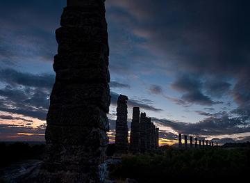
Foto de Javier Giménez
|
Los sillares de las pilastras
son un poco toscos y están colocados en seco. Las pilastras están
rematadas por un sillar en forma U como una caja labrada en la
piedra donde se situaría el specus, probablemente de madera breada y sujetado por tirantes, por
donde discurría el agua. |
|
Todo parece indicar que el agua
era captada de un pequeño dique cercano, al Norte de Puy Foradado,
de unos 50m de largo, que recogería las aguas de un manantial hoy
desaparecido.
El recorrido hasta la ciudad era salvado por canales excavados en la
roca que todavía pueden apreciarse en algunos puntos y conducían el
agua hasta las dos cisternas situadas una bajo la ermita y la otra
muy próxima a ella. El acueducto proporcionaba agua al edificio
termal, al poblado a la villas de la zona.
La presa romana de Los Bañales es de la primera presa de arcos de
gravedad de la Hispania romana. Se localiza en el paraje de
Cubalmena.
Aconsejamos ver video de Isaac Moreno Gallo.
|
EL TEMPLO
|
Se halla a la izquierda del camino que da
entrada al poblado. De él se conservan un muro formando un ángulo y un graderío
con la misma disposición que el muro. Ambos están realizados con grandes
sillares perfectamente labrados. Entre ambos se hallan unos bloques de piedra de
1x2m que tienen en sus lados mayores dos fragmentos de columna e
intercaladas con ellos, otros sillares cuadrada que presentan huellas de haber
soportado columnas. |
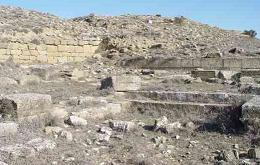 |
EL POBLADO
|
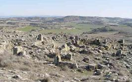 |
Se divide en 3 terrazas, por su frente
Este
donde se asienta la ciudad romana, ocupando las dos inferiores y culminando en
la cima en un edificio de grandes sillares, todavía en estudio. A las terrazas
se accede por una calle parcialmente enlosada, que parte de las inmediaciones
del templo. Las numerosas casas encontradas se levantan a ambos lados de las calles
trazadas, adaptándose al terreno para mejorar el desagüe de las aguas de lluvia.
Las casas son de grandes dimensiones, lo que nos indicaría la
riqueza de sus pobladores. Los muros que dan a la calle están
construidos con sillares mejor escuadrados y de mayor tamaño que los
de las paredes interiores realizados con toscos sillarejos. Aparecen
también losas grandes colocadas de forma perpendicular a las hiladas
horizontales de los muros y flanqueando las puertas. |
NECRÓPOLIS
|
Al Oeste a unos 300m se localizó la
necrópolis, con estelas y lapidas funerarias. Cercana a esta se halló una villa
con un mosaico geométrico y gran cantidad de restos cerámicos de distintas
épocas. También se describió una escultura de mármol y un bajo relieve de un
toro.
También tenemos noticias de un arco monumental, gracias al cosmógrafo
portugués Juan Bautista Labaña que se cree estaría en la puerta de acceso de la
ermita. |
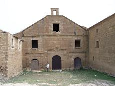 |
En junio de 2021 aparece la muralla
de cierre que delimitaba el yacimiento de Los Bañales. Por el momento,
han aparecido unos 15 metros de muro continuado, que se data entre
finales del siglo I a.e.c y comienzos del siglo I. En esta campaña se
han hallado también, una cantera, pasos de cebra y empedrados de suelo
con marcas del paso de carruajes, monedas, mármoles ornamentales,
monedas Prelatinas..... Foto:
Heraldo
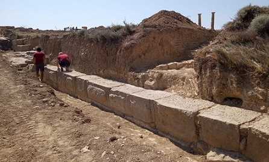
HISPANIA |